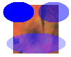

Практическое руководство. Рисование непрозрачными и полупрозрачными кистями
При заливке формы необходимо передать объект Brush одному из методов заливки класса Graphics. Единственным параметром конструктора SolidBrush является объект Color. Чтобы залить непрозрачную фигуру, следует установить значение альфа-компонента цвета в 255. Чтобы залить полупрозрачную фигуру, установите значение альфа-компонента в интервале от 1 до 254.
При заполнении полупрозрачной фигуры цвет фигуры смешивается с цветами фона. Альфа-компонент определяет степень смешивания цветов фигуры и фона. При значениях альфа, близких к 0, цвет фона имеет больший приоритет, при значениях альфа, близких к 255, больший приоритет имеет цвет фигуры.
Пример
В следующем примере рисуется растровое изображение, а затем осуществляется заливка трех эллипсов, перекрывающих растровое изображение. Для первого эллипса используется значение альфа-компонента, равное 255, поэтому он непрозрачен. Для второго и третьего эллипсов используется значение альфа-компонента, равное 128, поэтому они полупрозрачные и сквозь эллипсы видно фоновое изображение. Вызов, который устанавливает свойство CompositingQuality, вынуждает выполнить наложение для третьего эллипса совместно с гамма-коррекцией.
Bitmap bitmap = new Bitmap("Texture1.jpg");
e.Graphics.DrawImage(bitmap, 50, 50, bitmap.Width, bitmap.Height);
SolidBrush opaqueBrush = new SolidBrush(Color.FromArgb(255, 0, 0, 255));
SolidBrush semiTransBrush = new SolidBrush(Color.FromArgb(128, 0, 0, 255));
e.Graphics.FillEllipse(opaqueBrush, 35, 45, 45, 30);
e.Graphics.FillEllipse(semiTransBrush, 86, 45, 45, 30);
e.Graphics.CompositingQuality = CompositingQuality.GammaCorrected;
e.Graphics.FillEllipse(semiTransBrush, 40, 90, 86, 30);
На следующем рисунке показан вывода следующего кода:

Компиляция кода
Предыдущий пример предназначен для работы с Windows Forms и требует PaintEventArgse, который является параметром PaintEventHandler.